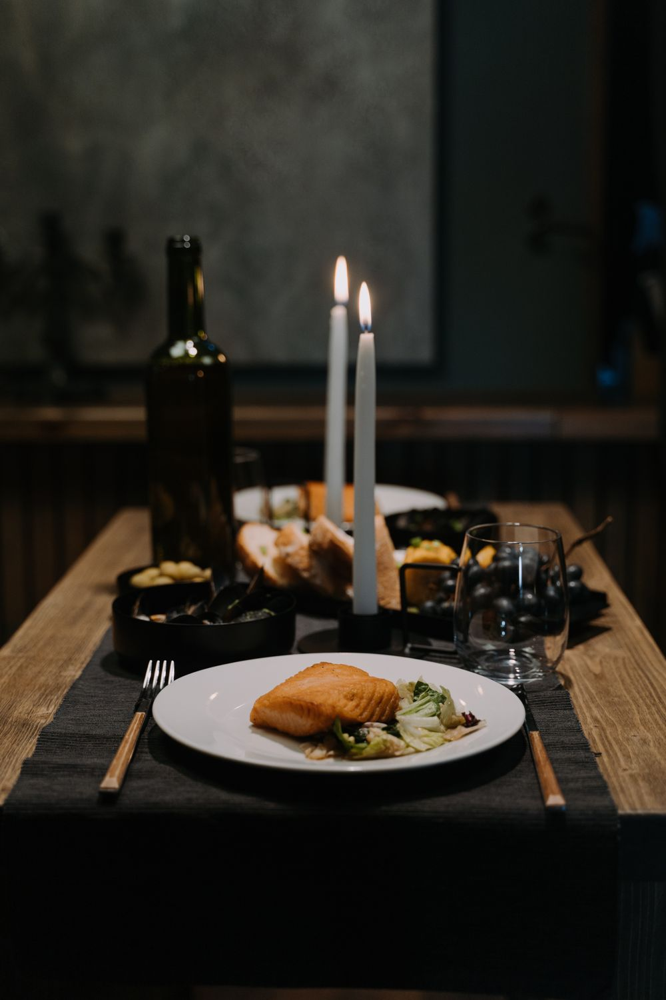

«Свет забыла дома, а в ресторане со вспышкой нельзя»
Кадр получается серым, лица не видно. В курсе — как вытянуть такое фото за пару минут.
Научу делать красивые фото на телефон — даже в тёмном ресторане и без вспышки. Простыми словами, на моих реальных кадрах.

«Свет забыла дома, а в ресторане со вспышкой нельзя»
Кадр получается серым, лица не видно. В курсе — как вытянуть такое фото за пару минут.
«Приложения скачаны, но я не понимаю, что нажимать»
Даже тон лица и шеи не получается свести. Показываю каждое касание со своего экрана.
«Куплю камеру — и будет красиво»
Я купила фотоаппарат и продала его через два часа. Красивый кадр делает обработка.
Двигай ползунок: слева — как снял телефон в полутёмном зале, справа — после Lightroom и Facetune.
В курсе — только мои реальные кадры, с разрешения всех, кто в кадре.
Тёмный кадр — это не только ресторан: вечер дома, детская, кафе, спортзал. Приём один и тот же.
← Двигай ползунок →
Скажу честно: курс — это не все траты. Часть функций в приложениях платная. Вот что можно бесплатно и без чего можно обойтись.
| Приложение | Что можно бесплатно | Что по подписке | Можно обойтись без подписки? | Примерно в месяц |
|---|---|---|---|---|
| Lightroom | [уточнить на дату запуска] | [уточнить на дату запуска] | [да / частично / нет] | [уточнить на дату запуска] |
| Facetune | [уточнить на дату запуска] | [уточнить на дату запуска] | [да / частично / нет] | [уточнить на дату запуска] |
| FaceApp | [уточнить на дату запуска] | [уточнить на дату запуска] | [да / частично / нет] | [уточнить на дату запуска] |
| AirBrush | [уточнить на дату запуска] | [уточнить на дату запуска] | [да / частично / нет] | [уточнить на дату запуска] |
Цены в приложениях меняются и зависят от магазина и способа оплаты. Суммы актуальны на [дата]. В уроке 0.4 показываю по шагам, как оформить и как не забыть отменить пробный период.
Сначала свет, потом лицо, потом финальные штрихи. Уроки по 5–12 минут — удобно смотреть с телефона.
+ в конце модулей 1–4 — короткий урок «Частые ошибки».
В курсе нет куратора — зато ты не проверяешь себя вслепую. К каждому заданию есть всё, чтобы сравнить.
Застряла с доступом или оплатой — напиши, ответит команда (контакты внизу, в разделе «Вопросы»).
Бесплатные ролики хорошие. Но обычно это отдельные приёмы — а ты остаёшься с вопросом «что делать дальше с этим фото».
Я записала мини-урок на 4 минуты: показываю с экрана, как спасаю тёмный кадр в Lightroom. Бесплатно, в Telegram — вместе с гайдом «Как вытянуть тёмное фото за 3 шага».
Получить мини-урокПосмотри, как я объясняю, — и реши, подходит ли тебе.
Это первый поток курса. Я не буду показывать чужие отзывы или придуманные цифры. Вместо этого — мои реальные кадры в уроках и бесплатный мини-урок, чтобы ты увидела, как я объясняю.
После первого потока здесь появятся «до/после» учениц — только тех, кто сам разрешил их показать.
Посмотреть мини-урокДоступ открывается сразу после оплаты — ссылка придёт на почту.
7 900 ₽
или от 1 317 ₽/мес в рассрочку
11 900 ₽
или от 1 984 ₽/мес в рассрочку
Первым 10 ученицам — [подарок: что именно]. Это мой первый поток, и мне важно, чтобы у первых учениц всё получилось. Подарок действует для первых 10 оплат, но не позже [дата]. Когда места закончатся, я напишу об этом здесь.
Проверь до покупки — это 2 минуты: открой App Store или Google Play и найди Lightroom, Facetune, FaceApp и AirBrush. Если все четыре устанавливаются, курс тебе подойдёт. Уроки записаны на [модель телефона Дарьи]. Где на Android кнопки в другом месте, показываю отдельно. Если на телефоне нет Google Play (такое бывает у некоторых Honor и Huawei), часть приложений может не установиться — лучше проверить заранее.
Курс сделан для тех, кто открывал приложения и закрывал. Объясняю простыми словами, без терминов, на экране видно каждое касание.
Часть функций — по подписке. Что именно и сколько это стоит — в таблице «Сколько стоят приложения» выше. В уроке 0.3 покажу, без чего можно обойтись, а в 0.4 — как оплатить подписку по шагам.
Часть приложений обрабатывает фото на своих серверах. Что они делают с фото, написано в их политике конфиденциальности — в уроке 3.1 покажу, где её найти. Моё правило: не загружай фото других людей, особенно детей, без их разрешения (за детей разрешает родитель). Если не хочешь ставить FaceApp, в уроке покажу, что можно сделать без него.
Уроки по 5–12 минут. Смотри в своём темпе — доступ не привязан к расписанию.
Сразу после оплаты ссылка на личный кабинет придёт на почту. Курс открывается с телефона и компьютера.
Да, на все тарифы. Рассрочку или оплату частями даёт [сервис / банк — после подключения платёжки], а не я. Решение об одобрении тоже принимает он. Срок, ежемесячный платёж и есть ли переплата, ты увидишь до подтверждения, на странице оплаты. Если рассрочку не одобрили, можно оплатить картой или через СБП.
Условия возврата прописаны в договоре-оферте: [коротко пересказать условия из оферты после проверки юристом].
Если не пришло письмо, не открывается урок или не проходит оплата — напиши в [Telegram-бот поддержки / почту поддержки]. Отвечает команда курса в рабочие дни. Вопросы по обработке фото разобраны в уроках «Частые ошибки» и в разделе «Помощь» внутри курса.